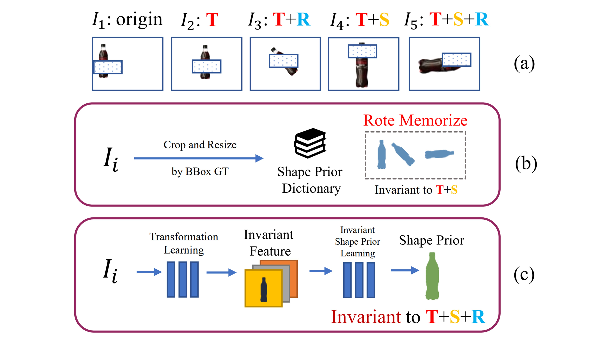
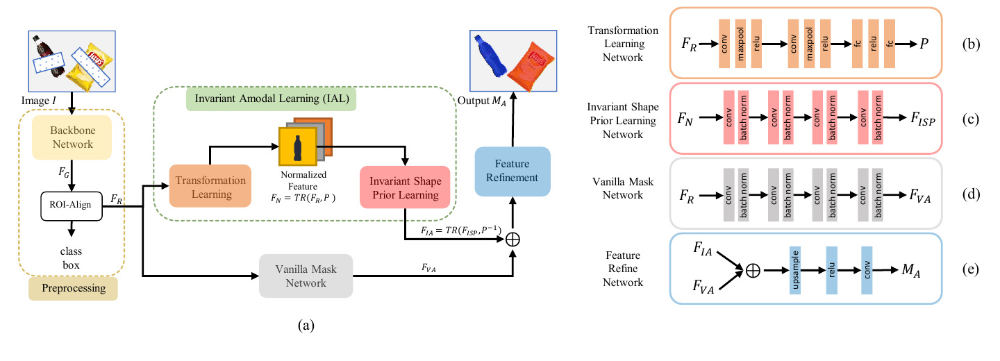
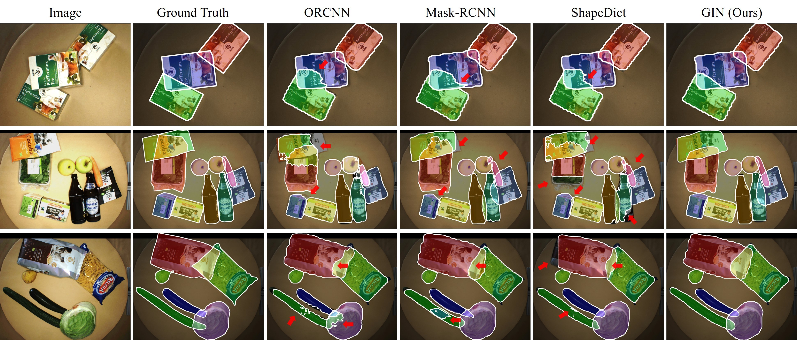
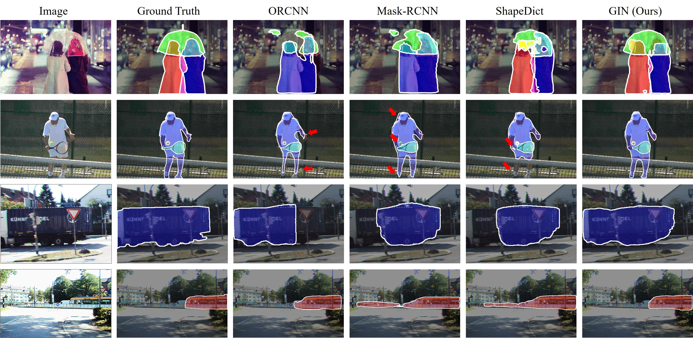

Abstract
Overview
Amodal instance segmentation predicts the complete shape of an occluded object, including both its visible and occluded regions. Because visual clues are unavailable for the hidden region, shape-prior knowledge is especially valuable. Previous 2D approaches establish a shape dictionary and retrieve the closest stored mask, but cannot provide priors outside that dictionary. We propose the generative invariant shape-prior network (GIN), which learns a basic shape invariant to translation, rotation, and scaling. By decoupling shape-prior learning from transformation, GIN is end-to-end trainable, requires no dictionary construction, and generalizes more effectively. GIN outperforms state-of-the-art methods by large margins on D2SA, COCOA-cls, and KINS.
01 · Figure
Dictionary-based methods memorize a finite set of masks and cannot retrieve an unseen shape. GIN instead learns a basic shape independent of translation, rotation, and scaling, then dynamically generates a suitable shape prior for each instance.

02 · Figure
The Proposed GIN Approach

03 · Figure
Qualitative Results on D2SA

04 · Figure
Generalization Across Datasets

Citation
BibTeX
@inproceedings{li2023gin,
author={Li, Zhixuan and Ye, Weining and Jiang, Tingting and Huang, Tiejun},
title={{GIN}: Generative INvariant Shape Prior for Amodal Instance Segmentation},
booktitle={IEEE Transactions on Multimedia},
pages={3924--3936},
year={2023}
}